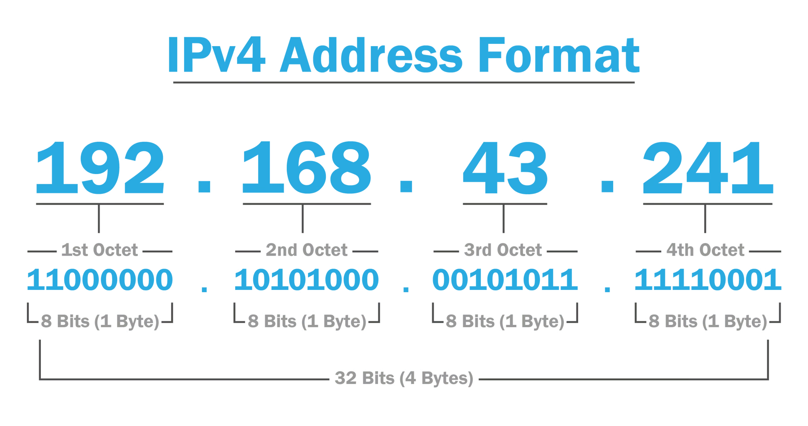
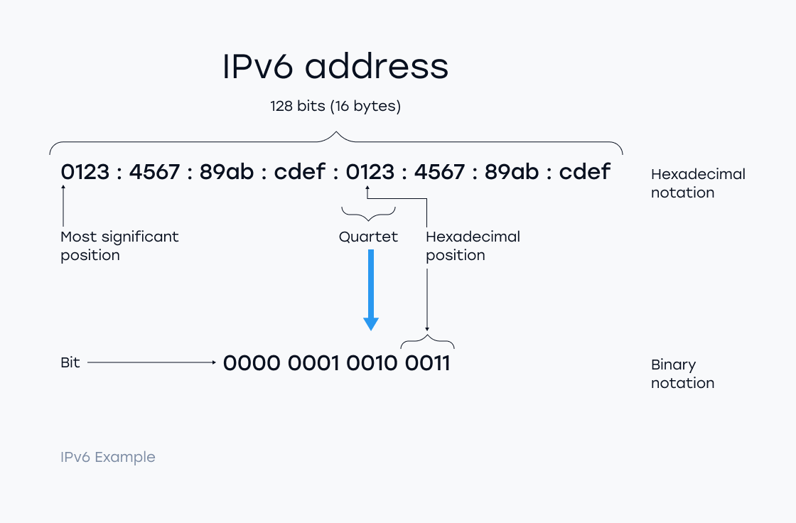

Syllabus
Investigate and practise how data is transferred on the internet, including:
- data packets
- internet protocol (IP) addresses, including IPv4
- domain name systems (DNS)
Learning Intention and Success Criteria
Learning Intention - Students will:
- Investigate how data is transferred over the internet using data packets, IP addresses, and the Domain Name System (DNS).
Success Criteria - Students can:
- Describe data packets and their role in internet data transfer.
- Explain the function of IPv4 addresses in identifying devices.
- Understand how DNS translates domain names into IP addresses.
Content
The internet enables billions of devices to communicate by breaking data into smaller, manageable packets, assigning unique IP addresses to every device, and using DNS to map human-readable domain names to machine-readable IP addresses. Understanding how these elements work together will provide you with a deeper insight into the foundations of modern networking and internet functionality.
Data Packet
What is a packet?
Imagine sending a long letter through a mail system that only allows small envelopes. Instead of trying to fit the entire letter into one envelope, you would break it into smaller parts, put each part into its envelope, and send them individually. When the recipient receives all the envelopes, they put the parts back together to read the full letter.
This is similar to how packets work in networking. When data, such as a file or image, is sent over the internet, it is broken down into smaller segments called packets. Each packet is transmitted independently and can take different routes to reach the destination. Once all packets arrive, the receiving device reassembles them to recreate the original data.
The Importance of Packets
Theoretically, large chunks of data could be sent in one continuous stream; however, this method would be inefficient, especially on shared networks. Imagine trying to communicate with someone using a single long phone call that prevents others from using the network.
Instead, packets allow multiple devices to use the same network resources simultaneously, as packets can be switched and routed through different paths independently.
Components of a Packet
Packet Switching and Routing
In a packet-switching network, each packet can travel a different route to its destination. This flexibility allows multiple devices to send data over the same network simultaneously. Once all packets arrive at the destination, protocols like TCP (Transmission Control Protocol) reassemble them into the correct order.
This method makes the internet robust, as packets can be rerouted if a path is busy or unavailable, ensuring that billions of devices can communicate concurrently.
Packet Security and Malicious Traffic
While packets enable seamless communication, they are also susceptible to manipulation for malicious purposes. Hackers may generate packets designed to overwhelm networks (e.g., in Distributed Denial of Service (DDoS) attacks). Advanced cybersecurity measures, such as packet inspection and filtering, help safeguard networks from these attacks.
Internet Protocol (IP)
Internet Protocol (IP) is a fundamental system that allows data to travel between devices over the internet. Every device connected to the internet is assigned a unique IP address, similar to a mailing address, that identifies it from other devices. This allows data to be sent and received across networks in a highly organised way.
When a message or file is sent over the internet, it is assigned a source and destination IP address. After the packets arrive at the destination IP address, another protocol, like Transmission Control Protocol (TCP), reassembles them into the original message.
What is IPv4?
Internet Protocol Version 4 (IPv4) is the most widely used IP version and has been the backbone of Internet communication for decades. IPv4 uses a 32-bit address system, meaning it can support around 4.3 billion unique IP addresses. This format typically represents four numbers separated by periods (e.g., 192.168.1.1).
IPv4 has been instrumental in enabling global communication, but its main limitation is the finite number of available addresses. As the internet expanded, the demand for IP addresses increased, leading to the problem of IPv4 address exhaustion.
Microsoft Runs Out of U.S. Addresses For Azure Cloud: Article
Key Features of IPv4
-
Address Format:
- An IPv4 address consists of four octets (8-bit segments), separated by periods, each ranging from 0 to 255 (e.g., 172.16.254.1).
-
Routing:
- IPv4 supports dynamic routing, allowing packets to travel through different paths and networks to reach their destination.
-
Subnetting:
- IPv4 allows the division of large networks into smaller sub-networks, optimises traffic, and enhances security within large-scale organisations.
-
Address Exhaustion:
- Despite its success, IPv4's limited address pool became a concern as internet usage grew exponentially, necessitating the development of a successor, IPv6.

IPv6
The introduction of Internet Protocol Version 6 (IPv6) was a response to the limitations of IPv4, particularly the exhaustion of available addresses. IPv6 provides a much larger address space, using 128-bit addresses, allowing for trillions of unique IP addresses. While IPv4 is still widely used, the adoption of IPv6 continues to grow to accommodate the increasing number of devices connected to the internet.

Domain Name System
The Domain Name System (DNS) is a crucial technology that translates human-readable domain names (like www.example.com) into IP addresses (like 192.0.2.1), which computers use to identify and communicate with each other over the internet. DNS acts as the internet's "phonebook," allowing users to access websites without remembering complex numerical IP addresses.
What is DNS?
Imagine trying to call someone, but instead of dialling their phone number, you say their name, and your phone automatically finds their number and places the call. DNS works similarly for the internet. When you type a website address into your browser, DNS translates the domain name into the correct IP address, allowing your computer to find and connect to the desired website.
Without DNS, you would have to memorise the numerical IP addresses of every website you wanted to visit, making navigating the internet extremely cumbersome.
How does DNS work?
When a user enters a URL, such as www.kings.edu.au, the browser initiates a DNS query to retrieve the IP address associated with that domain. This process involves multiple DNS servers, each performing a specific role:
- User input: a user enters a domain name (like ‘example.com’) into their web browser.
- DNS lookup: the browser sends a DNS query to a DNS resolver, typically provided by the user's internet service provider (ISP) or configured in their network settings
- DNS resolver: the DNS resolver receives the query and checks its cache to see if it already has the IP address for the requested domain. If the address is found in the cache and is still valid (has not expired), the resolver returns it immediately to the browser. If not, it proceeds to step 4.
- Recursive query: if the resolver doesn't have the IP address in its cache, it becomes responsible for finding it. It starts by querying the root DNS servers, which hold information about the top-level domains (like ‘.com’, ‘.org’, ‘.net’ and so on).
- Top-level domain (TLD) server: the root server directs the resolver to the appropriate TLD server based on the domain extension (for example, ‘.com’). The TLD server holds information about the authoritative name servers responsible for the next level of the domain hierarchy.
- Authoritative name server: the resolver contacts the authoritative name server for the specific domain (for example, ‘example.com’). This server holds the most up-to-date information about the domain, including its IP address.
- Response: the authoritative name server responds to the resolver with the requested IP address.
- Cache update: the resolver caches the IP address for future use, reducing the need for repeated lookups.
- Browser request: armed with the IP address obtained from DNS, the browser can now send a request to the appropriate server hosting the website.
- Website access: the server responds to the browser's request and the website is displayed to the user.
Types of DNS Servers
- Recursive DNS Server: The first point of contact for the user’s DNS query. It resolves the request by communicating with other DNS servers.
- Authoritative DNS Server: This server contains the actual DNS records (IP addresses) for domains and provides the definitive answer to a query.
- Root Nameserver: Directs queries to the appropriate TLD nameserver.
- TLD Nameserver: Responsible for resolving queries for specific top-level domains (like .com, .org).
Types of DNS Queries
-
Recursive Query: The client expects the DNS server to return the correct IP address or an error message if the domain is not found.
-
Iterative Query: The DNS server provides the best answer, typically directing the query to another DNS server with the required information.
-
Non-Recursive Query: The DNS server returns a cached result, offering a faster response without contacting other servers.
Why is DNS Important?
DNS ensures that users can access websites using easy-to-remember domain names instead of complex IP addresses. It also optimises performance by caching results, reducing the time required for repeated lookups. Without DNS, navigating the internet would be both tedious and impractical.
DNS Caching
Caching plays a critical role in DNS efficiency. When a DNS query is resolved, the result is stored temporarily (cached) by the resolver. The next time the same query is made, the DNS resolver can return the cached IP address without repeating the entire lookup process. This reduces latency and network traffic, allowing websites to load more quickly.
Security Considerations: DNS Cache Poisoning
DNS is not without vulnerabilities. One of the most common security issues is DNS cache poisoning (also known as DNS spoofing). In this attack, malicious actors inject false DNS records into the resolver’s cache, causing users to be redirected to harmful websites. This can lead to phishing, malware infections, and other security breaches.
Find out more about the latest discovered method of DNS Cache Poisoning here.
Activity
Practical
Cisco Packet tracer
PowerPoint